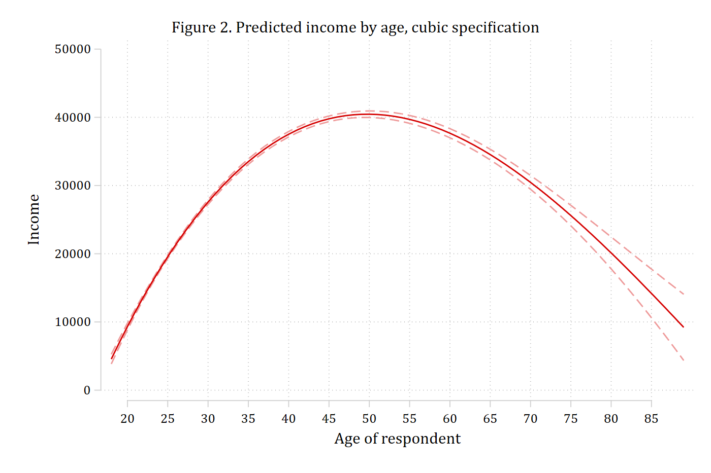

MEMs, AMEs, MERs, and ideal types
Sections 1–2 of Mize and Han (forthcoming): where, and how far, to change the focal variable
A marginal effect is the difference between two predictions. Calculating one means deciding on three things: the amount of change in the focal variable, where the change starts, and where the other variables in the model are held. Mize and Han (forthcoming) walk through these choices and the standard summary measures they lead to – marginal effects at the mean (MEMs), average marginal effects (AMEs), marginal effects at representative values (MERs), and ideal types. In mecompare the same three decisions are amount() (with centered/uncentered), start(), and covariates(). This page repeats the chapter’s calculations on the pooled 1972–2021 GSS.
Marginal effects at chosen values (Section 1)
The chapter starts with a linear regression of income on age and calculates the effect of one more year of age for a 30-year-old and for a 50-year-old. start(age=(30 50)) puts everyone at each age in turn, and uncentered makes the one-unit change run from 30 to 31 (rather than 29.5 to 30.5, the centered default). With a linear effect the two marginal effects are identical and equal the coefficient on age:
use "https://tdmize.github.io/data/data/cda_gss", clear(cda_gss.dta | GSS 1972-2021 CDA - Categorical Data Analysis | date created 2023)
. quietly regress income c.age, vce(robust)
estimates store linmod. mecompare age, models(linmod) start(age=(30 50)) uncenteredPredicting: Linear prediction
Marginal effects (N_linmod=38993)
| ME # Estimate Robust SE P>|z|
---------------------------------+---------------------------------------
age + 1 (uncentered) |
at 30 | 1 423.166 10.967 0.000
at 50 | 2 423.166 10.967 0.000Nonlinear effects in a linear model
Adding age² and age³ makes the effect of age depend on age. The plot of predictions shows where: income rises steeply at younger ages, peaks around 50, and declines after that.
quietly regress income c.age##c.age##c.age, vce(robust)
estimates store cubmod. quietly margins, at(age=(18(1)89))
marginsplot, recast(line) recastci(rline) ciopts(lpattern(dash) color(*.4)) ///
xlabel(20(5)85) ylabel(0(10000)50000) xtitle("Age of respondent") ytitle("Income") ///
title("Figure 2. Predicted income by age, cubic specification")Variables that uniquely identify margins: agegraph export "fig/chapter-income-age.png", replace width(1400)(file fig/chapter-income-age.png not found)
file fig/chapter-income-age.png saved as PNG format
The chapter compares a ten-year increase in age starting at 30 with one starting at 60. amount(10) sets the size of the change and start(age=(30 60)) the two starting points; uncentered again makes the change run upward from the start (30 to 40, and 60 to 70). Because both effects are rows of one table, metest can test whether they differ, which the chapter’s margins and mlincom calculations could not do directly:
mecompare age, models(cubmod) start(age=(30 60)) amount(10) uncenteredPredicting: Linear prediction
Marginal effects (N_cubmod=38993)
| ME # Estimate Robust SE P>|z|
---------------------------------+---------------------------------------
age + 10 (uncentered) |
at 30 | 1 9947.741 131.062 0.000
at 60 | 2 -7209.963 383.977 0.000metest 1 - 2 | estimate se pvalue
---------------------------------+--------------------------------
age_at30 - age_at60 | 17157.704 469.938 0.000 A ten-year increase in age is associated with roughly a $10,000 increase in income for 30-year-olds but a $7,000 decrease for 60-year-olds.
Categorical models
The same calculation in a logit model of employment status on age, for men. A logit is inherently nonlinear, so the marginal effects differ across ages even with only a linear term for age in the model. The chapter compares a ten-year increase starting at 20 with one starting at 60:
quietly logit employed c.age if woman == 0, vce(robust)
estimates store empmen. mecompare age, models(empmen) start(age=(20 60)) amount(10) uncenteredPredicting: Pr(employed)
Marginal effects (N_empmen=30162)
| ME # Estimate Robust SE P>|z|
---------------------------------+---------------------------------------
age + 10 (uncentered) |
at 20 | 1 -0.054 0.001 0.000
at 60 | 2 -0.139 0.002 0.000metest 1 - 2 | estimate se pvalue
---------------------------------+--------------------------------
age_at20 - age_at60 | 0.084 0.003 0.000 For someone starting at age 20, a ten-year increase in age is associated with a 0.05 lower probability of being employed; for someone starting at 60, with a 0.14 lower probability.
Summary measures (Section 2)
The rest of the chapter’s calculations use a logit of employment status on age, gender, years of education, and race-ethnicity, for all respondents.
quietly logit employed c.age i.woman c.edyrs i.race4, vce(robust)
estimates store empmodMarginal effect at the mean (MEM)
A MEM holds every variable in the model at its sample mean: the focal variable starts at its mean (start(atmeans)) and the control variables are held at theirs (covariates(atmeans), or simply atmeans). Here the change is one standard deviation of age, centered on the mean – half a standard deviation below to half above – which is mecompare’s default for any amount:
mecompare age, models(empmod) amount(sd) start(atmeans) covariates(atmeans)Predicting: Pr(employed)
Marginal effects (N_empmod=68050)
| ME # Estimate Robust SE P>|z|
---------------------------------+---------------------------------------
age + SD |
empmod | 1 -0.186 0.002 0.000For an average person, a standard deviation increase in age (about 18 years) is associated with a 0.19 lower probability of being employed.
Average marginal effect (AME)
An AME calculates the change for every observation, starting from its own values, and averages. It is the default: nothing needs to be specified beyond the amount of change. The chapter reports the AME of a one-year increase and of a standard-deviation increase:
mecompare age, models(empmod)Predicting: Pr(employed)
Marginal effects (N_empmod=68050)
| ME # Estimate Robust SE P>|z|
---------------------------------+---------------------------------------
age + 1 |
empmod | 1 -0.009 0.000 0.000mecompare age, models(empmod) amount(sd)Predicting: Pr(employed)
Marginal effects (N_empmod=68050)
| ME # Estimate Robust SE P>|z|
---------------------------------+---------------------------------------
age + SD |
empmod | 1 -0.153 0.001 0.000On average, an additional year of age is associated with a 0.01 lower probability of being employed, and a standard-deviation increase in age with a 0.15 lower probability. As the chapter notes, the AME and MEM rarely differ by more than a small amount; the preference for the AME is its cleaner interpretation.
Marginal effects at representative values (MERs)
A MER puts the focal variable at a value of substantive interest – the chapter’s example is 55, an ideal type of “middle age” – and calculates the change from there. start(age=55) sets everyone to 55, and uncentered runs the change upward from 55 (to 56 for a one-unit change, and to about 73 for a standard-deviation change). The other variables in the model stay at their observed values and the effect is averaged over the sample, as in the chapter’s replication code; add atmeans to hold them at their means instead, as in the chapter’s Equations 24–25.
mecompare age, models(empmod) start(age=55) uncenteredPredicting: Pr(employed)
Marginal effects (N_empmod=68050)
| ME # Estimate Robust SE P>|z|
---------------------------------+---------------------------------------
age + 1 (uncentered) |
empmod | 1 -0.010 0.000 0.000mecompare age, models(empmod) start(age=55) amount(sd) uncenteredPredicting: Pr(employed)
Marginal effects (N_empmod=68050)
| ME # Estimate Robust SE P>|z|
---------------------------------+---------------------------------------
age + SD (uncentered) |
empmod | 1 -0.176 0.002 0.000Ideal types
Ideal types extend the idea from one focal variable to a cluster of characteristics. The chapter adds parenthood and number of children to the model and defines two ideal types: a “middle-aged mother” (age 55, a woman, a parent, two children) and a “young single man” (age 25, a man, not a parent, no children). covariates() sets the characteristics of each ideal type, and start(age=55) amount(5) uncentered is the change from 55 to 60 for the first and start(age=25) the change from 25 to 30 for the second. Each mecompare call is one ideal type, so the question “is the effect of aging the same for each?” is answered by running both:
quietly logit employed c.age i.woman i.parent c.numchild c.edyrs i.race4, vce(robust)
estimates store empmod2. mecompare age, models(empmod2) start(age=55) amount(5) uncentered ///
covariates(woman=1 parent=1 numchild=2)Predicting: Pr(employed)
Marginal effects (N_empmod2=67869)
| ME # Estimate Robust SE P>|z|
---------------------------------+---------------------------------------
age + 5 (uncentered) |
empmod2 | 1 -0.054 0.001 0.000mecompare age, models(empmod2) start(age=25) amount(5) uncentered ///
covariates(woman=0 parent=0 numchild=0)Predicting: Pr(employed)
Marginal effects (N_empmod2=67869)
| ME # Estimate Robust SE P>|z|
---------------------------------+---------------------------------------
age + 5 (uncentered) |
empmod2 | 1 -0.033 0.000 0.000Aging five years is predicted to reduce the probability of employment for both ideal types, by about 0.05 for middle-aged mothers and about 0.03 for young single men. The predicted probabilities for each ideal type (Equations 26–27 of the chapter) are predictions rather than marginal effects, and stay with margins, at(age=55 woman=1 parent=1 numchild=2).
Reference
Mize, Trenton D. and Bing Han. Forthcoming. “Marginal effects: flexible methods for interpretation across linear and nonlinear models.” In Understanding Data Modeling and Data Analysis, edited by David Weakliem. Edward Elgar Publishing.